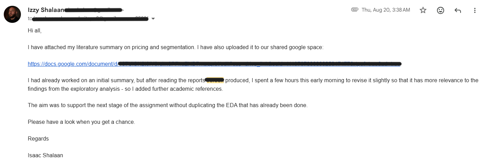
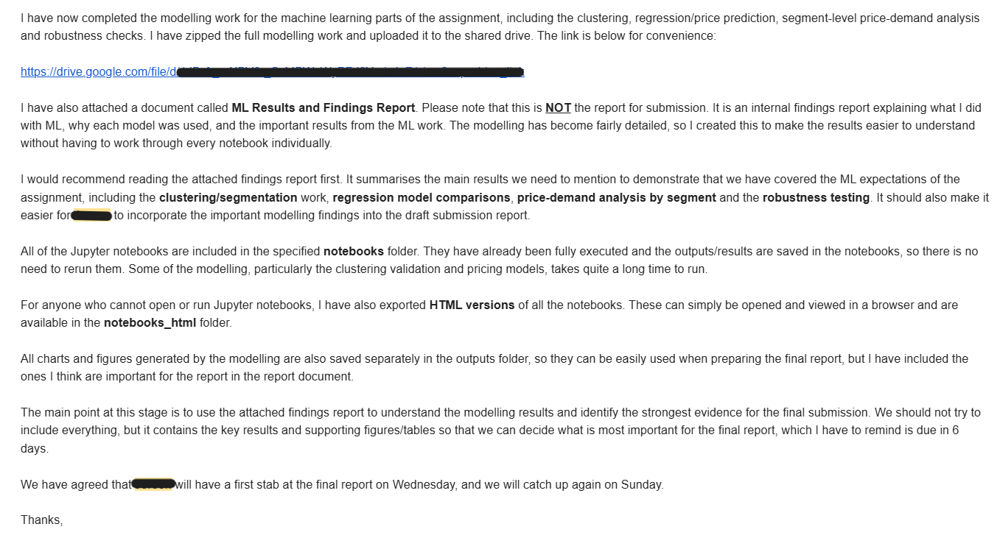
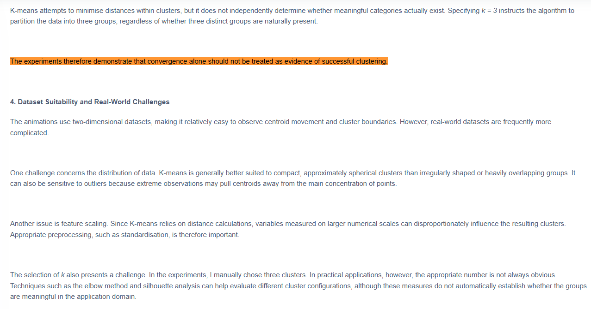
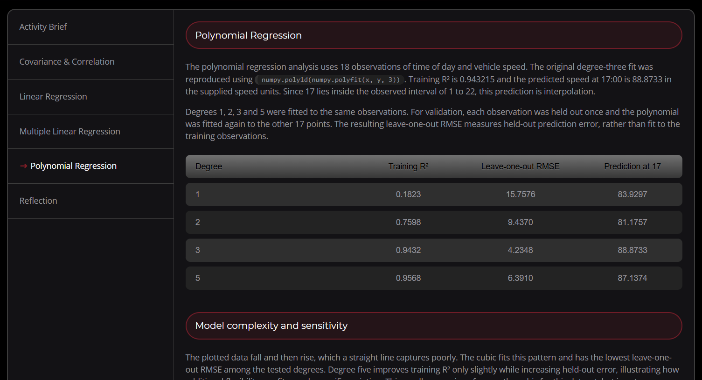
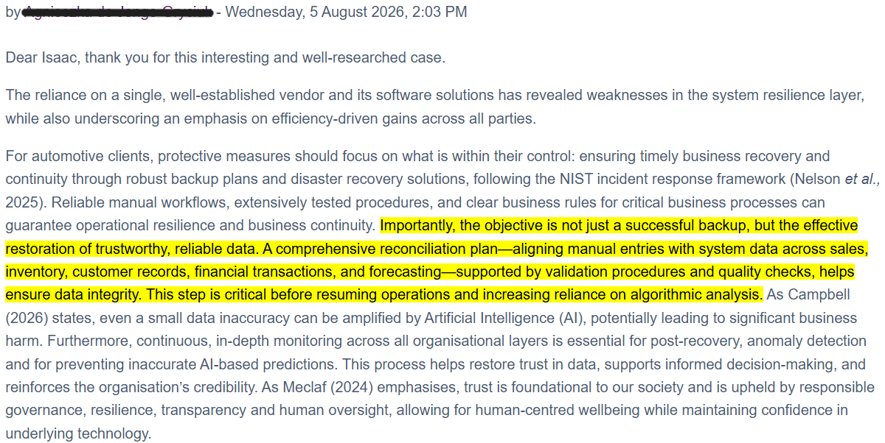
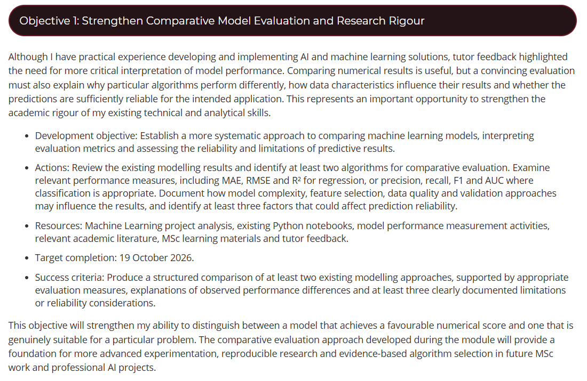
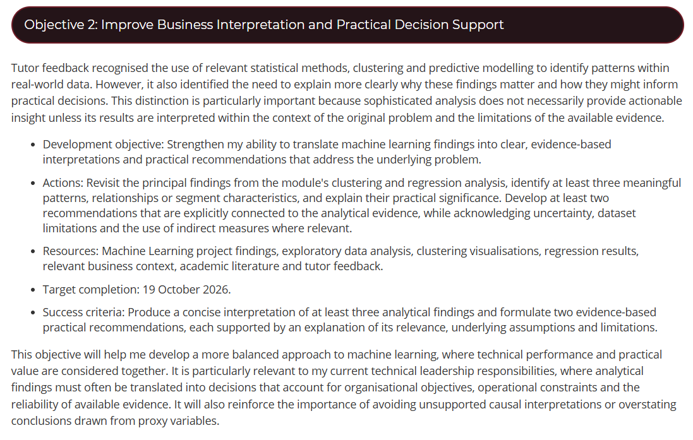
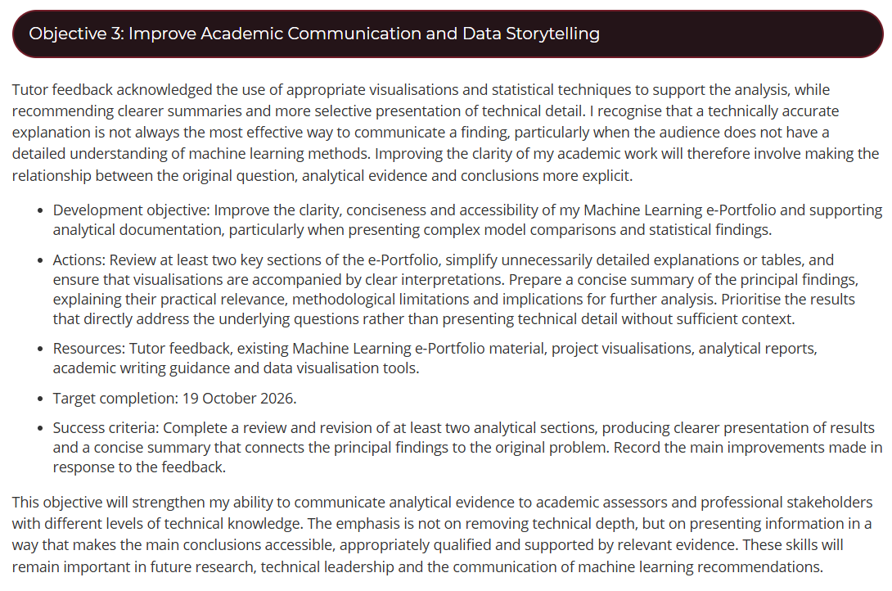

I approached Machine Learning with confidence in implementation, but the module made me reconsider what I needed to learn beyond producing working models. My most valuable learning came from explaining results to peers, responding to feedback and deciding how far I could trust my findings. Using Rolfe, Freshwater and Jasper's (2001) framework, I reflect on that development through the Airbnb team project and my separate individual steel-defect investigation.
For the Airbnb project, I prepared the team contract and developed the clustering, price prediction, segment analysis and robustness notebooks. Reading a peer's exploratory analysis led me to revise my literature summary and add research more relevant to the group's pricing question (Figure 1). I was adapting my work to what a peer had established, rather than treating my technical responsibilities as a separate task.

Figure 1. Literature revision informed by a peer's analysis.
I shared executed notebooks, HTML exports and an internal findings report so peers could review the modelling without rerunning lengthy experiments (Figure 2). A peer would prepare the first report draft, and I recommended selecting the strongest findings rather than including everything. However, I now question whether my summary left enough room for peers to develop their own interpretations. Making work accessible was valuable, but I cannot assume that access alone produced shared understanding.

Figure 2. Modelling handover and coordination of the team's final report.
Tutor feedback helped me recognise that distinction. It acknowledged systematic modelling but asked for clearer cluster interpretation, recommendations and explanations of performance differences. I had invested effort in communicating the analysis, yet had not made its practical meaning clear enough. After 18 years in software development, technical ownership felt reassuringly familiar. Looking back, that confidence may have encouraged me to explain more before checking what peers understood. I now need to test whether my explanations help others interpret findings, instead of assuming that detail resolves uncertainty.
My clustering wiki gave me another reason to question convincing-looking results. Watching K-means partition uniform points helped me understand why convergence does not establish meaningful populations (Jain, 2010), as discussed in Figure 3. In Airbnb, I used K-prototypes for room type and distance (Huang, 1998), but adding availability and stay behaviour increased stability while weakening separation. Retaining five baseline clusters meant weighing usefulness against competing measures. I learned to take responsibility for that judgement instead of allowing one score to settle it. The absence of a distinct shared-room segment also reminded me to ask whose characteristics the chosen representation obscured.

Figure 3. Wiki reflection on meaningful clustering.
I became more cautious about what our pricing analysis could support. Reviews provided a demand proxy, not observed bookings. Shmueli's (2010) distinction between prediction and causal explanation helped me articulate why sensitivity checks did not establish the effect of changing prices. CatBoost narrowly led cross-validation on log-price error, while Random Forest had slightly lower dollar-scale test MAE. Calling either model simply "best" would conceal a choice about what mattered. I would now clarify the intended decision and error scale earlier. Recommending segment-specific price testing was a useful outcome, even though the evidence could not identify optimal individual prices.
The polynomial exercise encouraged similar scrutiny (Figure 4). Degree five improved training fit but worsened leave-one-out error relative to degree three. Cawley and Talbot (2010) also challenged how confidently I could interpret results used for model selection. In Industrial Defect Intelligence, I used shared development folds and froze HOG-SVM and CNN models before final evaluation. Correcting labels and excluding an exact duplicate gave me stronger grounds for confidence in the data preparation. Still, earlier exploration covered the full collection and acquisition groups were unknown. My progress from Unit 6 lay in making these boundaries explicit, rather than claiming that a more controlled workflow removed every uncertainty.

Figure 4. Polynomial regression and validation error.
The CNN's 95.56% accuracy against HOG-SVM's 90.28% was a substantial achievement, but it was not the result that most changed my judgement. Under blur, CNN macro F1 fell to 0.5547 against HOG-SVM's 0.7659. These synthetic tests did not establish factory failure rates. This reversal made me reconsider what recommending the CNN would mean. Hendrycks and Dietterich (2019) helped frame robustness as a separate concern, while Sokolova and Lapalme (2009) reinforced the importance of choosing appropriate measures. Examining lower CNN recall for pitted surfaces showed me why aggregate improvements could conceal a consequential weakness. I now want an explanation of which errors matter before accepting a favourable average.
I also learned to be more restrained when interpreting Grad-CAM images. They showed regions associated with predictions (Selvaraju et al., 2020), but did not establish that the model relied on defects causally. NEU-CLS also lacked normal-steel images. Gebru et al. (2021) helped me see dataset documentation as a way of communicating these limits. A peer's response in the Industry 4.0 discussion similarly developed my thinking beyond restoring software towards validating recovered data (Figure 5). Together, these experiences broadened what I considered my responsibility when recommending analytical systems.

Figure 5. Peer feedback on trustworthy data recovery.
My Skills Matrix and PDP identify comparative evaluation, business interpretation and communication priorities (Figures 6-8). At the 19 October review, I will assess two models, three reliability limitations, three meaningful findings, two qualified recommendations and revisions to two portfolio sections. In future teamwork, I would ask a peer to challenge my recommendations before finalising the analysis.

Figure 6. PDP comparative evaluation objective.

Figure 7. PDP business interpretation objective.

Figure 8. PDP communication objective.
Beyond these objectives, I would reserve independent production data before exploration, document model-search budgets and agree class-specific error costs with inspectors. Normal-steel images and representative operating conditions would be essential before progressing towards deployment. A supervised pilot remains a proposal, with licensing and confidentiality requiring review. Balancing senior responsibilities with concurrent modules has reinforced the PDP's emphasis on protected evaluation time. I will carry forward a more deliberate habit of pausing to interpret, seek challenge and qualify conclusions before adding further modelling.
Across both projects, I learned that sound modelling is only one part of useful machine learning. The wider responsibility is to establish when results are dependable, communicate where they are not, and ensure that decisions remain proportionate to the evidence.
Cawley, G.C. and Talbot, N.L.C. (2010) 'On over-fitting in model selection and subsequent selection bias in performance evaluation', Journal of Machine Learning Research, 11, pp. 2079-2107. Available at: https://jmlr.org/papers/v11/cawley10a.html (Accessed: 18 October 2026).
Gebru, T., Morgenstern, J., Vecchione, B., Vaughan, J.W., Wallach, H., Daumé III, H. and Crawford, K. (2021) 'Datasheets for datasets', Communications of the ACM, 64(12), pp. 86-92. Available at: https://doi.org/10.1145/3458723 (Accessed: 18 October 2026).
Hendrycks, D. and Dietterich, T. (2019) 'Benchmarking neural network robustness to common corruptions and perturbations', International Conference on Learning Representations. Available at: https://doi.org/10.48550/arXiv.1903.12261 (Accessed: 18 October 2026).
Huang, Z. (1998) 'Extensions to the k-means algorithm for clustering large data sets with categorical values', Data Mining and Knowledge Discovery, 2(3), pp. 283-304. Available at: https://doi.org/10.1023/A:1009769707641 (Accessed: 18 October 2026).
Jain, A.K. (2010) 'Data clustering: 50 years beyond K-means', Pattern Recognition Letters, 31(8), pp. 651-666. Available at: https://doi.org/10.1016/j.patrec.2009.09.011 (Accessed: 18 October 2026).
Rolfe, G., Freshwater, D. and Jasper, M. (2001) Critical reflection for nursing and the helping professions: a user's guide. Basingstoke: Palgrave. Available at: https://www.ncbi.nlm.nih.gov/nlmcatalog/101129697 (Accessed: 18 October 2026).
Selvaraju, R.R., Cogswell, M., Das, A., Vedantam, R., Parikh, D. and Batra, D. (2020) 'Grad-CAM: visual explanations from deep networks via gradient-based localization', International Journal of Computer Vision, 128(2), pp. 336-359. Available at: https://doi.org/10.1007/s11263-019-01228-7 (Accessed: 18 October 2026).
Shmueli, G. (2010) 'To explain or to predict?', Statistical Science, 25(3), pp. 289-310. Available at: https://doi.org/10.1214/10-STS330 (Accessed: 18 October 2026).
Sokolova, M. and Lapalme, G. (2009) 'A systematic analysis of performance measures for classification tasks', Information Processing & Management, 45(4), pp. 427-437. Available at: https://doi.org/10.1016/j.ipm.2009.03.002 (Accessed: 18 October 2026).